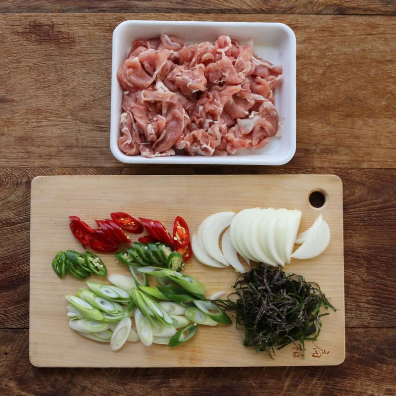
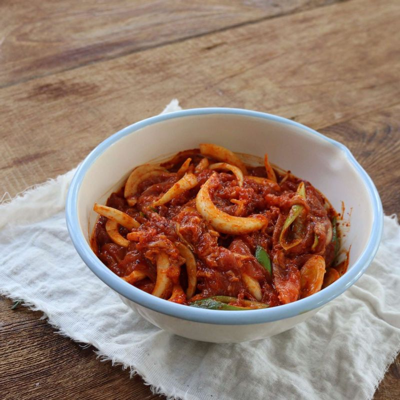
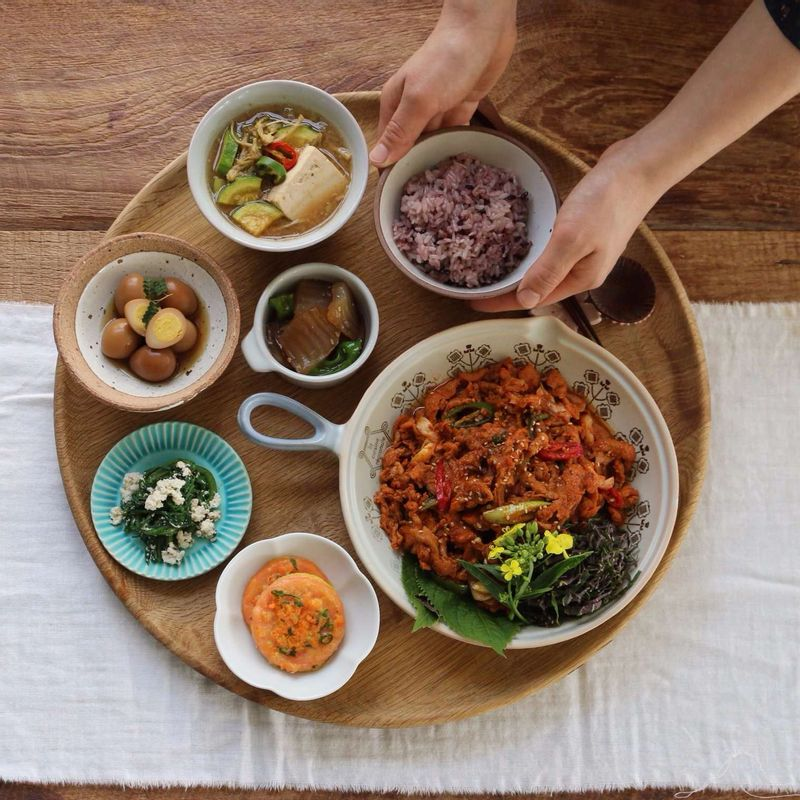

-

돼지고기는 먹기 좋은 크기로 자르고, 양파와 깻잎은 채를 썰어주세요. 대파와 청양고추, 홍고추는 어슷하게 썰어주세요.
-

볼에 양념재료를 넣어 섞은 후, 돼지고기를 넣고 주물러서 먼저 양념하고 양파와 대파를 더해 섞어 20분 정도 양념장에 재워주세요.
-
팬에 약간의 기름을 두르고 양념한 돼지고기와 야채를 넣고 볶아주세요. 돼지고기가 익으면 청양고추, 홍고추, 참기름을 넣어 살짝 볶고 불을 꺼주세요.
-

접시에 제육볶음을 담고, 채썬 깻잎과 깨를 뿌려주세요